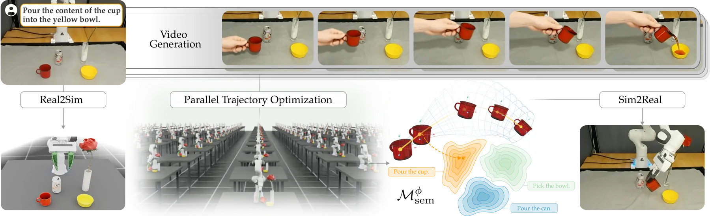
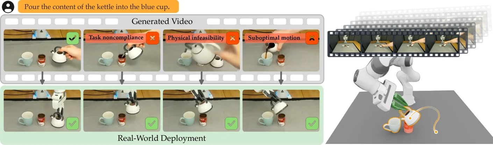
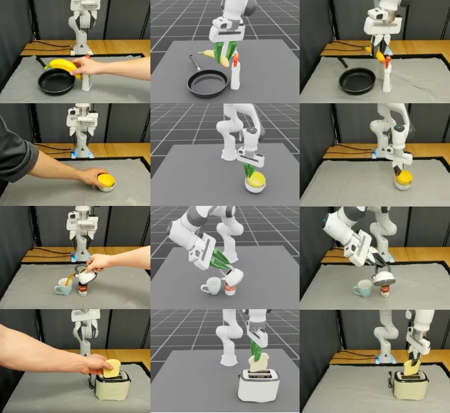

CASTER：把“从合成视频做零样本操作”形式化为约束优化
CASTER: Formalizing Zero-Shot Manipulation from Synthetic Videos as Constrained Optimization
把“冻结视频生成器产出合成演示 → 真实机器人轨迹”统一成带语义一致性（ℙ[𝒢_τ(ξ)=1]≥1−ε_sem）与物理可行性（ℙ[ξ∈ℱ_R]≥1−ε_phys）约束的优化问题，并用 Markov 不等式给出“生成质量 σ_vid 与语义吸引域半径 ρ 之比”决定成功播种概率的界；CASTER 用 LLM 抽取任务关键特征并跨多条采样视频取中位/加权参考，在 Isaac Sim 数字孪生里用 CEM 优化 6P 维末端样条；12 项真实桌面任务平均零样本成功率 76.6±3.9%，比最佳基线高 34.1 个百分点。
success
delta
videos
gate
作者、单位与技术谱系 · Research context
作者与单位
研究脉络
- 冻结的图像-文本条件视频生成模型（HunyuanVideo-1.5 等）方法基座关系：生成器只在推理期提供“任务未来可能长什么样”的采样，作为优化初始猜测，不被微调。[论文 §III、§VI]
- RIGVid（Patel et al., 2025, arXiv:2507.00990）问题相邻工作关系：直接重定向流派：假设刚性抓取、用运动学把物体运动映射成机器人运动，不显式施加物理可行性约束——本文把它写成公式 (4) 的特例（特定跟踪代价 + 无可行性约束）。[论文 §IV-C、§VI-1]
- PhysWorld（Mao et al., 2025, arXiv:2511.07416）问题相邻工作关系：数字孪生流派：在孪生中优化机器人行为以跟踪单一目标物体轨迹——对应本文公式 (18) 的更受限代价。[论文 §IV-C、§VI-2]
- NovaFlow / NovaPlan / Dream2Flow / Gen2Act / GenMimic / RoboReact问题相邻工作关系：同为“从生成视频恢复运动再转成机器人行为”的一族方法，本文声称可把它们统一为同一形式化的不同简化。[论文 §II]
- 本篇推进：统一形式化 + 两项简化去除本篇推进关系：去掉两个简化——用任务特征 φ 代替逐路点匹配、用多条采样视频的期望代替单条视频参考——并给出生成质量与语义吸引域半径的界。[论文 §IV-B、§V]
合作网络
- Virginia Tech ↔ Johns Hopkins University 跨机构共同署名Virginia Tech（Yinlong Dai、Dylan P. Losey） → Johns Hopkins University（Homanga Bharadhwaj）关系：共同署名（跨机构）[arXiv 官方 HTML 首页]
- 对公开仿真、重建与生成模型的依赖CASTER 系统 → Isaac Sim / SAM 3D / TrackCraft3R / HunyuanVideo-1.5 / Qwen3.5关系：明确技术依赖（非共同署名）[论文 §V-B、§VI]
- NSF 资助标注Virginia Tech 团队 → NSF Grant #2337884关系：公开资助（作者脚跟注）[arXiv 官方 HTML 首页脚注]
作者与单位取自论文首页署名与脚注（Collab/ME @ Virginia Tech，B3/CS @ Johns Hopkins）。谱系与“特例”关系来自论文 §IV-C 的明示对照，属作者自述；网络边只包含跨机构共同署名、公开技术依赖与公开资助，未发现可核验的导师/师生关系，故不推断。§VI 的实验数字（表 I、表 II）为论文报告值。
方法本质拆解 · What actually changed
是不是微调？
没有任何模型被训练或微调。视频生成器在推理期被当作黑盒 q_vid(v|o,τ) 采样，参数、梯度与内部表示都不可用；VLM 校验器、深度估计模型、TrackCraft3R、SAM 3D 与 LLM 特征抽取器都是现成模型。真正被优化的变量只有机器人在数字孪生中的末端轨迹样条参数 ξ_a ∈ R^{6P}，优化方法是免梯度的 CEM。因此它是“冻结生成器 + 测试时轨迹优化”的组合，而非学习式策略。
有没有额外约束？
新增约束有三层：语义一致性约束 ℙ[𝒢_τ(ξ)=1] ≥ 1−ε_sem（在实现中通过 VLM 预过滤视频来预先保证）、物理可行性约束 ℙ[ξ∈ℱ_R] ≥ 1−ε_phys（在数字孪生中落成力阈值 ‖F(ξ_a)‖ ≤ F̄ 与关节限位 q_min ≤ q(ξ_a) ≤ q_max）、以及带安全裕度的孪生形式 ℙ[ĝ^sim_j ≤ −δ_j] ≥ 1−ε_phys 以吸收仿真-真实偏差。约束作用在末端轨迹参数与由其诱导的物体/机器人轨迹上，不修改生成器输入。
推理/后端到底做了什么？
推理链路为：任务与初始 RGB-D → 采样多条合成视频 → VLM 语义校验并丢弃不合格者 → 逐帧深度估计（首帧仿射对齐到观测深度）与 TrackCraft3R 刚体跟踪得到物体轨迹 → LLM 指定关键物体关系与跟踪维度 → 跨视频取中位/加权参考与时间权 → 在 Isaac Sim 数字孪生中用 CEM 优化末端样条并施加力/关节约束 → 从可行候选的低代价四分位中随机取 3 条轨迹开环执行。没有训练、没有在线闭环、也没有第二级后端优化器。
方法本质是什么？
本质是把“合成视频能否变成可执行动作”这件事拆成两个可分别论证的部分：生成器只负责把搜索播种到语义吸引域内，优化器负责在满足物理可行性约束的前提下把轨迹拉向任务关键特征。它改变的不确定性是“上游生成先验的误差”如何被下游优化吸收——用跨多样本的中位/加权参考降低对单条视频噪声的敏感性，用特征化代价放宽不重要的自由度，从而扩大可行解集合（等价于增大可容忍的 σ_vid/ρ 比）。它没有做的是：不训练策略、不做闭环控制、也不在优化中显式求解语义约束。
输入为语言任务 τ、初始 RGB-D 观测 o 与冻结视频生成器的多次采样；改变的位置是数字孪生中机器人末端轨迹样条的 6P 维参数（无权重更新）；约束与合并动作是“LLM 指定任务关键特征 + 跨视频取中位/方差加权参考”的代价，以及在 CEM 中施加力阈值与关节限位；直接效果是 12 项真实桌面任务平均零样本成功率 76.6%，比最佳基线高 34.1（个百分点级）。

桥接价值Bridge
桥接价值
这篇工作把“用生成模型规划具身行为”从一个工程拼装问题，提升为一个可以定义、可以分析、也可以判定成败条件的优化问题：目标函数是任务特征偏差，约束是语义一致性（任务成功谓词 𝒢_τ）与物理可行性（可行轨迹集 ℱ_R），而视频生成只负责“播种”。这正好补上你在“学习 + 几何/轨迹优化”交界处需要的那一层：什么条件下上游生成先验可以被下游优化安全吸收。它的三条结论对工程有直接指导意义：一是不同流派（直接重定向 / 数字孪生跟踪）都能写成同一问题的特例；二是成功率受“生成误差 σ_vid 与可局部修改半径 ρ 之比”约束；三是选择任务时要看语义吸引域大小，pick-and-place 有利而接触密集任务不利。论文报告 12 项真实桌面任务平均零样本成功率 76.6%，比最佳基线高 34.1 个百分点。
方法与模块Method
方法摘要
设定是零样本桌面操作：给定自然语言任务 τ 与初始 RGB-D 观测 o，机器人只能用自身观测、本体模型与该冻结生成器的采样来完成任务。CASTER 先按 (o,τ) 采样多条合成视频，用 Qwen3.5 类 VLM 校验语义（论文取分数 ≥0.75 的视频保留）；随后用深度估计模型逐帧估计深度并对首帧做仿射对齐、用 TrackCraft3R 追踪物体表面稠密三维点以拟合刚体变换，得到物体轨迹 ξ_o^video；再用 LLM 依据任务与物体标签输出“任务关键物体关系（目标-上下文对）”和“需要跟踪的轨迹维度”，据此计算跨视频的中位位置/均值朝向参考 ξ̄_τ 与按跨演示方差指数衰减的时间权 w_t。求解在数字孪生（Isaac Sim + SAM 3D 重建物体）里做：优化变量是机器人末端轨迹样条的 6P 维控制参数，采用 CEM，代价为 Σ_t w_t·‖φ(ξ_o^t) − ξ̄_τ^t‖，约束为交互力 ‖F(ξ_a)‖ ≤ F̄ 与关节限位 q_min ≤ q(ξ_a) ≤ q_max；每条样本视频各初始化一次独立优化，最终轨迹开环执行。
可迁移模块
可迁移的有三块。第一块是“特征化代价”：不再逐路点匹配，而是让 LLM 指定哪些物体关系与哪些维度是任务关键的，再用跨多条采样视频的中位数与方差构造参考与权重——这是把“生成结果的不确定性”直接写进目标函数的做法，可迁移到任何“上游先验 + 下游优化”的管线。第二块是“验证后再使用”的数据闸门：所有合成视频先经 VLM 语义校验、只有通过的才进入特征提取，且训练/测试时刻一致，避免把语义错误的内容学成参考。第三块是“约束的可迁移表述”：把物理可行性用带安全裕度 δ_j 的数字孪生约束 ℙ[ĝ^sim_j ≤ −δ_j, ∀j] ≥ 1−ε_phys 表达，并给出“若 |g^real − ĝ^sim| ≤ δ_j 则孪生中满足更强约束即蕴含真实满足”的论证，这与你把仿真/模型误差显式写进约束的做法同构。

证据Evidence
关键证据与数字
来源：论文表 I、表 II 与 §VII。(1) 12 项真实桌面任务平均零样本成功率：CASTER 76.6 ± 3.9%，Mimic（类 PhysWorld，孪生内逐路点精确模仿）42.5 ± 4.5%，Retarget（类 RIGVid，刚性直接重定向）32.1%；相对最佳基线的提升为 34.1（个百分点级，论文写作 34.1%）。(2) 任务级差异：Move banana in pan 上 Retarget 0.0% → Mimic 66.7% → CASTER 100.0%；Stack bowl 14.3% → 28.6% → 100.0%；Pour cup 42.9% → 52.4% → 95.2%；Toast bread 28.6% → 14.3% → 90.5%；而 Pour kettle 61.9%、Close lid 57.1%、Pile up blocks 57.1%、Cover bucket 33.3%、Draw on whiteboard 28.6% 仍偏低。(3) 生成模型敏感性（表 II，4 任务 × 80 条视频）：HunyuanVideo-1.5 有效 55/80、成功率 79.8 ± 6.5%；Wan 2.2 有效 71/80、76.2 ± 6.1%；LTX-2.3 有效 52/80、47.6 ± 8.6%；CogVideoX1.5 有效 1/80、0.0 ± 0.0%。作者据此指出“有效视频条数本身不能解释下游成功率”，更可能取决于特征误差相对语义吸引域的大小。(4) 实验规模：Franka Emika 机械臂 + 固定 Orbbec Femto Mega 相机；每任务 20 条视频（随机种子 0–19）、121 帧 @24 fps 480p；评测随机取 7 条有效视频各跑一次 CEM，每任务 21 次试验（Retarget 为 7 次）。
边界与下一步Limits & Next Step
边界与风险
风险与边界有四点。其一，方法把语义约束“预先满足”而非在优化中求解：论文明确 Equation 19 不再包含语义一致性约束，理由是所用视频已由 VLM 过滤为语义正确，因此成立前提正是“这些视频播种在语义吸引域内”——一旦生成器给出的运动虽过 VLM 校验但落在吸引域外，形式化保证即失效。其二，最大失败源是与真实物理不符的数字孪生：Pour kettle 因夹爪挤压导致水壶在手中转动、Cover bucket 因桶把手有旋转关节而未被刚体重建表达，两任务上本文也仅 61.9% 与 33.3%。其三，评测协议中 Mimic 与 CASTER 报告的是 7 次优化运行的均值与标准误（每任务 21 次试验），而 Retarget 只报告成功率，三者的统计口径并不完全对称；同时“无法执行（有效视频或可行轨迹不足）也算失败”这一条会同时压低所有方法。其四，生成模型依赖性强：换成 CogVideoX1.5 时 80 条里只有 1 条通过校验、成功率为 0，说明方法并不是“生成器无关”的。我们待核验的是：论文未报告 σ_vid 与 ρ 的实测值，公式 (17) 的界目前是分析性的、未被实验标定。
下一步实验
(1) 在自建“上游生成/预测 + 下游几何优化”的管线上，做最小 A/B：逐项（逐路点）匹配 vs 任务特征加权 + 跨多样本中位数参考，量化后者对约束违反率与任务成功率的影响，这一步不需要任何训练，是纯目标函数替换。(2) 复现其“VLM 校验阈值 ≥0.75”这类数据闸门，测出在你的任务上闸门通过与下游成功率的关系，验证“有效样本数不等于有效信息量”这一论断。(3) 把数字孪生安全裕度 δ_j 的表述搬到你自己的仿真-真实差距场景中，用 |g^real − ĝ^sim| 的实测分布反推 δ_j，并检查“孪生中满足更强约束即蕴含真实满足”这一条件在你的系统里是否成立。(4) 先在自己的任务集合上估计语义吸引域半径 ρ：做“只扰动任务关键特征、看任务是否仍成功”的小实验，用其结果判断哪些任务适合用生成先验驱动。

